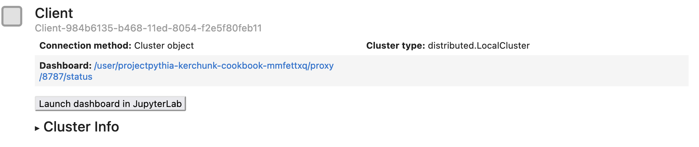

{kind=link}
Parallel virtual dataset creation with VirtualiZarr, Kerchunk, and Dask
Overview
In this notebook we will cover:
How to parallelize the creation of virtual datasets using the
Dasklibrary.
This notebook builds upon the Basics of virtual Zarr stores and the Multi-file virtual datasets with VirtualiZarr notebooks. A basic understanding of Dask will be helpful, but is not required. This notebook is not intended as a tutorial for using Dask, but will show how to use Dask to greatly speedup the the generation of virtual datasets.
Prerequisites
Concepts |
Importance |
Notes |
|---|---|---|
Required |
Core |
|
Required |
Core |
|
Recommended |
IO/Visualization |
|
Recommended |
Parallel Processing |
Time to learn: 45 minutes
Dask and Parallel Processing
Dask is a Python library for parallel computing. It plays well with Xarray, but can be used in many ways across the Python ecosystem. This notebook is not intended to be a guide for how to use Dask, but just an example of how to use Dask to parallelize some VirtualiZarr and Kerchunk functionality.
In the previous notebook Multi-file virtual datasets with VirtualiZarr, we were looking at daily downscaled climate data over South-Eastern Alaska. We created a virtual dataset for each input file using list comprehension in Python.
With Dask, we can call open_virtual_dataset in parallel, which allows us to create multiple virtual datasets at the same time.
Further on in this notebook, we will show how using Dask can greatly speed-up the process of creating a virtual datasets.
Setting up the Dask Client
In the code below, we are importing Dask Disributed and creating a client. This is the start of our parallel Kerchunk data processing. We are passing the argument n_workers=8. This will inform the Dask client on some of the resource limitations.
Note: Depending on if you are running on a small machine such as a laptop or a larger compute hub, these resources could be tuned to improve performance.
import logging
from distributed import Client
client = Client(n_workers=8, silence_logs=logging.ERROR)
client
Client
Client-c429ec03-a05a-11ef-8bc4-002248357acb
| Connection method: Cluster object | Cluster type: distributed.LocalCluster |
| Dashboard: http://127.0.0.1:8787/status |
Cluster Info
LocalCluster
a58179cc
| Dashboard: http://127.0.0.1:8787/status | Workers: 8 |
| Total threads: 8 | Total memory: 15.61 GiB |
| Status: running | Using processes: True |
Scheduler Info
Scheduler
Scheduler-90c97876-b860-459c-bc54-4e1c008088b9
| Comm: tcp://127.0.0.1:39967 | Workers: 8 |
| Dashboard: http://127.0.0.1:8787/status | Total threads: 8 |
| Started: Just now | Total memory: 15.61 GiB |
Workers
Worker: 0
| Comm: tcp://127.0.0.1:38179 | Total threads: 1 |
| Dashboard: http://127.0.0.1:35563/status | Memory: 1.95 GiB |
| Nanny: tcp://127.0.0.1:36637 | |
| Local directory: /tmp/dask-scratch-space/worker-bsllkyy2 | |
Worker: 1
| Comm: tcp://127.0.0.1:42879 | Total threads: 1 |
| Dashboard: http://127.0.0.1:46251/status | Memory: 1.95 GiB |
| Nanny: tcp://127.0.0.1:38107 | |
| Local directory: /tmp/dask-scratch-space/worker-tltnvx8c | |
Worker: 2
| Comm: tcp://127.0.0.1:39155 | Total threads: 1 |
| Dashboard: http://127.0.0.1:42565/status | Memory: 1.95 GiB |
| Nanny: tcp://127.0.0.1:34305 | |
| Local directory: /tmp/dask-scratch-space/worker-41y3ae_v | |
Worker: 3
| Comm: tcp://127.0.0.1:36949 | Total threads: 1 |
| Dashboard: http://127.0.0.1:44927/status | Memory: 1.95 GiB |
| Nanny: tcp://127.0.0.1:43111 | |
| Local directory: /tmp/dask-scratch-space/worker-4951i56f | |
Worker: 4
| Comm: tcp://127.0.0.1:39599 | Total threads: 1 |
| Dashboard: http://127.0.0.1:37443/status | Memory: 1.95 GiB |
| Nanny: tcp://127.0.0.1:34251 | |
| Local directory: /tmp/dask-scratch-space/worker-m_l_hodd | |
Worker: 5
| Comm: tcp://127.0.0.1:32837 | Total threads: 1 |
| Dashboard: http://127.0.0.1:39797/status | Memory: 1.95 GiB |
| Nanny: tcp://127.0.0.1:43779 | |
| Local directory: /tmp/dask-scratch-space/worker-zcm5vn5k | |
Worker: 6
| Comm: tcp://127.0.0.1:40689 | Total threads: 1 |
| Dashboard: http://127.0.0.1:38353/status | Memory: 1.95 GiB |
| Nanny: tcp://127.0.0.1:43313 | |
| Local directory: /tmp/dask-scratch-space/worker-xep3m2wj | |
Worker: 7
| Comm: tcp://127.0.0.1:38641 | Total threads: 1 |
| Dashboard: http://127.0.0.1:36417/status | Memory: 1.95 GiB |
| Nanny: tcp://127.0.0.1:40813 | |
| Local directory: /tmp/dask-scratch-space/worker-6qzkep2s | |
Binder Specific Setup
If you are running this tutorial on Binder, the configuration may look slightly different.
Once you start the client, some information should be returned to you as well as a button that says:
Launch Dashboard in JupyterLab
{kind=link}
Once you click that button, multiple windows of the Dask dashboard should open up.
{kind=link}
Building off of our Previous Work
In the next section, we will re-use some of the code from the multi-file virtual datasets with VirtualiZarr notebook. However, we will modify it slightly to make it compatible with Dask.
The following two cells should look the same as before. As a reminder we are importing the required libraries, using fsspec to create a list of our input files and setting up some kwargs for fsspec to use.
import dask
import fsspec
from virtualizarr import open_virtual_dataset
# Initiate fsspec filesystems for reading and writing
fs_read = fsspec.filesystem("s3", anon=True, skip_instance_cache=True)
# Retrieve list of available days in archive for the year 2060.
files_paths = fs_read.glob("s3://wrf-se-ak-ar5/ccsm/rcp85/daily/2060/*")
# Here we prepend the prefix 's3://', which points to AWS.
files_paths = sorted(["s3://" + f for f in files_paths])
Subset the Data
To speed up our example, lets take a subset of the year of data.
# If the subset_flag == True (default), the list of input files will
# be subset to speed up the processing
subset_flag = True
if subset_flag:
files_paths = files_paths[0:4]
Dask Specific Changes
Here is the section of code that will change. Instead of iterating through each input file and using open_virtual_dataset to create the virtual datasets, we are iterating through our input file list and creating Dask Delayed Objects. It is not super important to understand this, but a Dask Delayed Object is lazy, meaning it is not computed eagerly. Once we have iterated through all our input files, we end up with a list of Dask Delayed Objects.
When we are ready, we can call dask.compute on this list of delayed objects to create virtual datasets in parallel.
def generate_virtual_dataset(file, storage_options):
return open_virtual_dataset(
file, indexes={}, reader_options={"storage_options": storage_options}
)
storage_options = dict(anon=True, default_fill_cache=False, default_cache_type="first")
# Generate Dask Delayed objects
tasks = [
dask.delayed(generate_virtual_dataset)(file, storage_options)
for file in files_paths
]
Dask Task Graph
Once you call dask.compute it can be hard to understand what is happening and how far along the process is at any time. Fortunately, Dask has a built in dashboard to help visualize your progress.
Running this notebook locally
When you first initialized the Dask client earlier on, it should have returned some information including an address to the dashboard. For example: http://127.0.0.1:8787/status
By navigating to this address, you should a Dask dashboard that looks something like this.

When you call dask.compute(tasks), the dashboard should populate with a bunch of tasks. In the dashboard you can monitor your progress, see how resources are being used as well as well as countless other functionality.

Running on Binder
If you are running this example notebook on Binder, the Dask dashboard should look slightly different. Since Binder is running the notebook on another computer, navigating to localhost will give you an error.
The Binder specific Dask graph should look something more like this:
{kind=link}
Start the Dask Processing
dask.compute(*tasks)
(<xarray.Dataset> Size: 31MB
Dimensions: (Time: 1, interp_levels: 9, south_north: 250,
west_east: 320, soil_layers_stag: 4)
Coordinates:
interp_levels (interp_levels) float32 36B ManifestArray<shape=(9,), dtyp...
Time (Time) int32 4B ManifestArray<shape=(1,), dtype=int32, chu...
Dimensions without coordinates: south_north, west_east, soil_layers_stag
Data variables: (12/39)
V (Time, interp_levels, south_north, west_east) float32 3MB ...
lat (south_north, west_east) float32 320kB ManifestArray<shape...
T2 (Time, south_north, west_east) float32 320kB ManifestArray...
TSLB (Time, soil_layers_stag, south_north, west_east) float32 1MB ManifestArray<shape=(1, 4, 250, 320), dtype=float32, chunks=(1, 4, 250, 32...
LH (Time, south_north, west_east) float32 320kB ManifestArray...
U10 (Time, south_north, west_east) float32 320kB ManifestArray...
... ...
Q2 (Time, south_north, west_east) float32 320kB ManifestArray...
SWUPB (Time, south_north, west_east) float32 320kB ManifestArray...
SLP (Time, south_north, west_east) float32 320kB ManifestArray...
SH2O (Time, soil_layers_stag, south_north, west_east) float32 1MB ManifestArray<shape=(1, 4, 250, 320), dtype=float32, chunks=(1, 4, 250, 32...
QVAPOR (Time, interp_levels, south_north, west_east) float32 3MB ...
PCPT (Time, south_north, west_east) float32 320kB ManifestArray...
Attributes:
contact: rtladerjr@alaska.edu
data: Downscaled CCSM4
date: Mon Oct 21 11:37:23 AKDT 2019
format: version 2
info: Alaska CASC,
<xarray.Dataset> Size: 31MB
Dimensions: (Time: 1, interp_levels: 9, south_north: 250,
west_east: 320, soil_layers_stag: 4)
Coordinates:
interp_levels (interp_levels) float32 36B ManifestArray<shape=(9,), dtyp...
Time (Time) int32 4B ManifestArray<shape=(1,), dtype=int32, chu...
Dimensions without coordinates: south_north, west_east, soil_layers_stag
Data variables: (12/39)
V (Time, interp_levels, south_north, west_east) float32 3MB ...
lat (south_north, west_east) float32 320kB ManifestArray<shape...
T2 (Time, south_north, west_east) float32 320kB ManifestArray...
TSLB (Time, soil_layers_stag, south_north, west_east) float32 1MB ManifestArray<shape=(1, 4, 250, 320), dtype=float32, chunks=(1, 4, 250, 32...
LH (Time, south_north, west_east) float32 320kB ManifestArray...
U10 (Time, south_north, west_east) float32 320kB ManifestArray...
... ...
Q2 (Time, south_north, west_east) float32 320kB ManifestArray...
SWUPB (Time, south_north, west_east) float32 320kB ManifestArray...
SLP (Time, south_north, west_east) float32 320kB ManifestArray...
SH2O (Time, soil_layers_stag, south_north, west_east) float32 1MB ManifestArray<shape=(1, 4, 250, 320), dtype=float32, chunks=(1, 4, 250, 32...
QVAPOR (Time, interp_levels, south_north, west_east) float32 3MB ...
PCPT (Time, south_north, west_east) float32 320kB ManifestArray...
Attributes:
contact: rtladerjr@alaska.edu
data: Downscaled CCSM4
date: Mon Oct 21 11:40:02 AKDT 2019
format: version 2
info: Alaska CASC,
<xarray.Dataset> Size: 31MB
Dimensions: (Time: 1, interp_levels: 9, south_north: 250,
west_east: 320, soil_layers_stag: 4)
Coordinates:
interp_levels (interp_levels) float32 36B ManifestArray<shape=(9,), dtyp...
Time (Time) int32 4B ManifestArray<shape=(1,), dtype=int32, chu...
Dimensions without coordinates: south_north, west_east, soil_layers_stag
Data variables: (12/39)
V (Time, interp_levels, south_north, west_east) float32 3MB ...
lat (south_north, west_east) float32 320kB ManifestArray<shape...
T2 (Time, south_north, west_east) float32 320kB ManifestArray...
TSLB (Time, soil_layers_stag, south_north, west_east) float32 1MB ManifestArray<shape=(1, 4, 250, 320), dtype=float32, chunks=(1, 4, 250, 32...
LH (Time, south_north, west_east) float32 320kB ManifestArray...
U10 (Time, south_north, west_east) float32 320kB ManifestArray...
... ...
Q2 (Time, south_north, west_east) float32 320kB ManifestArray...
SWUPB (Time, south_north, west_east) float32 320kB ManifestArray...
SLP (Time, south_north, west_east) float32 320kB ManifestArray...
SH2O (Time, soil_layers_stag, south_north, west_east) float32 1MB ManifestArray<shape=(1, 4, 250, 320), dtype=float32, chunks=(1, 4, 250, 32...
QVAPOR (Time, interp_levels, south_north, west_east) float32 3MB ...
PCPT (Time, south_north, west_east) float32 320kB ManifestArray...
Attributes:
contact: rtladerjr@alaska.edu
data: Downscaled CCSM4
date: Mon Oct 21 11:42:40 AKDT 2019
format: version 2
info: Alaska CASC,
<xarray.Dataset> Size: 31MB
Dimensions: (Time: 1, interp_levels: 9, south_north: 250,
west_east: 320, soil_layers_stag: 4)
Coordinates:
interp_levels (interp_levels) float32 36B ManifestArray<shape=(9,), dtyp...
Time (Time) int32 4B ManifestArray<shape=(1,), dtype=int32, chu...
Dimensions without coordinates: south_north, west_east, soil_layers_stag
Data variables: (12/39)
V (Time, interp_levels, south_north, west_east) float32 3MB ...
lat (south_north, west_east) float32 320kB ManifestArray<shape...
T2 (Time, south_north, west_east) float32 320kB ManifestArray...
TSLB (Time, soil_layers_stag, south_north, west_east) float32 1MB ManifestArray<shape=(1, 4, 250, 320), dtype=float32, chunks=(1, 4, 250, 32...
LH (Time, south_north, west_east) float32 320kB ManifestArray...
U10 (Time, south_north, west_east) float32 320kB ManifestArray...
... ...
Q2 (Time, south_north, west_east) float32 320kB ManifestArray...
SWUPB (Time, south_north, west_east) float32 320kB ManifestArray...
SLP (Time, south_north, west_east) float32 320kB ManifestArray...
SH2O (Time, soil_layers_stag, south_north, west_east) float32 1MB ManifestArray<shape=(1, 4, 250, 320), dtype=float32, chunks=(1, 4, 250, 32...
QVAPOR (Time, interp_levels, south_north, west_east) float32 3MB ...
PCPT (Time, south_north, west_east) float32 320kB ManifestArray...
Attributes:
contact: rtladerjr@alaska.edu
data: Downscaled CCSM4
date: Mon Oct 21 11:45:30 AKDT 2019
format: version 2
info: Alaska CASC)
Shut down the Dask cluster
client.shutdown()
Timing
To demonstrate how Dask can speed-up your virtual dataset generation, the next section will show the timing of generating reference files with and without Dask. For reference, the timing was run on a large AWS Jupyter-Hub (managed by the fine folks at 2i2c) with ~16 CPU and ~64 GB RAM. It is also important to note that the data is also hosted on AWS.
Serial Virtualization |
Parallel Virtualization (Dask) |
|---|---|
7 min 22 s |
36 s |
Running our Dask version on the year of data took only ~36 seconds. In comparison, creating the VirtualiZarr virtual datasets one-by-one took about 7 minutes and 22 seconds.
Just by changing a few lines of code and using Dask, we got our code to run 11x faster. One other detail to note is that there is usually a bit of a delay as Dask builds its task graph before any of the tasks are started. All that to say, you may see even better performance when using Dask, VirtualiZarr, and Kerchunk on larger datasets.
Note: These timings may vary for you. There are many factors that may affect performance, such as:
Geographical location of your compute and the source data
Internet speed
Compute resources, IO limits and # of workers given to
DaskLocation of where to write reference files to (cloud vs local)
This is meant to be an example of how Dask can be used to speed-up Kerchunk not a detailed benchmark in Kerchunk/Dask performance.
Next Steps
In this notebook we demonstrated how Dask can be used to parallelize the creation of virtual datasets. In the following Case Studies section, we will walk though examples of using VirtualiZarr and Kerchunk with Dask to create virtual cloud-optimized datasets.
Additionally, if you wish to explore more of Kerchunk's Dask integration, you can try checking out Kerchunk's auto_dask method, which combines many of the Dask setup steps into a single convenient function.